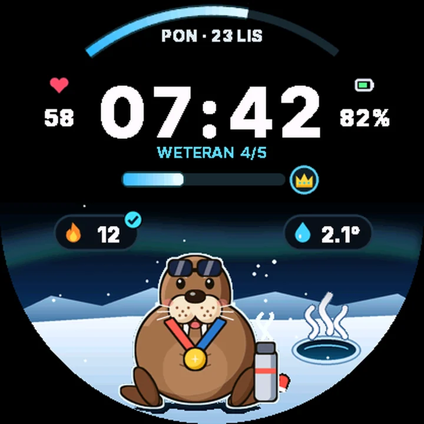
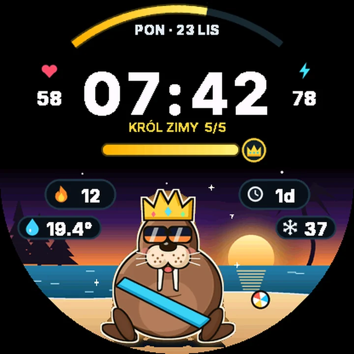
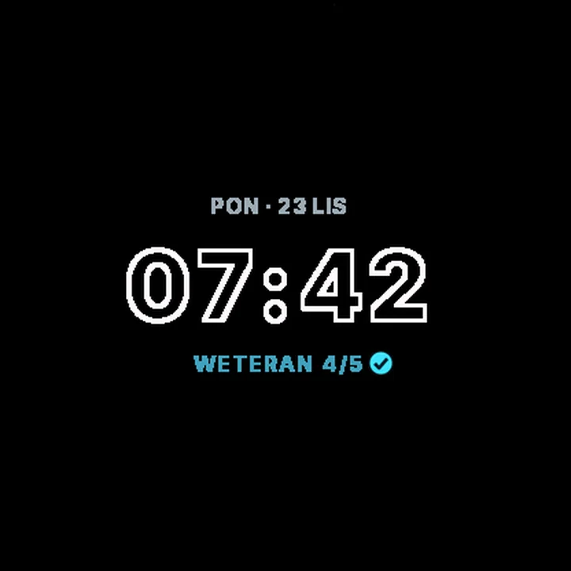
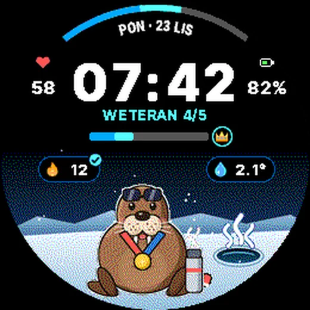
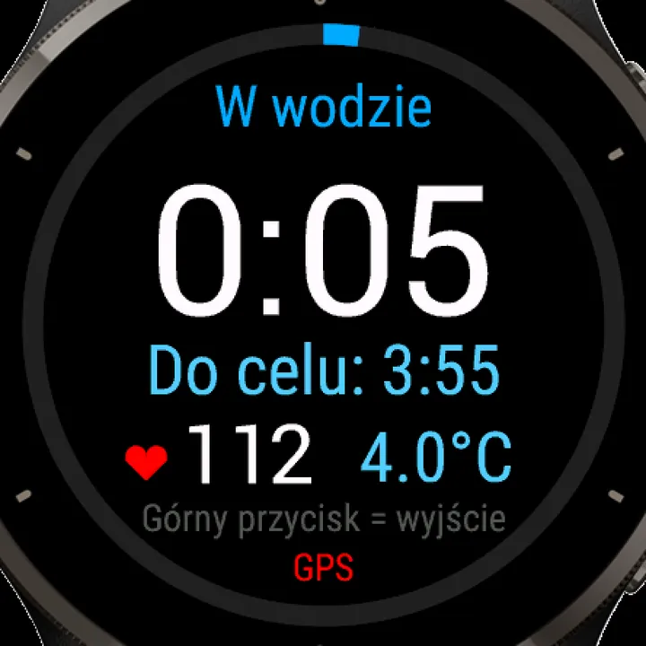

Przed wejściem / w wodzie / po wyjściu
Górny przycisk przełącza etapy. Czas w wodzie po prostu leci — aplikacja nigdy nie każe Ci wychodzić. To Twoja decyzja. Ostatni czas jest tylko punktem odniesienia, nie celem do pobicia.
Na zegarku aplikacja nazywa się Morsowanie.
Morsowanie i zimne kąpiele zapisane jak należy — nie jako pływanie.
5,0 w Connect IQ · 1000+ pobrań
Albo wyszukaj „Cold Dip” w aplikacji Connect IQ w telefonie.


Systemy
Aplikację możesz już pobrać na zegarki Garmin. Wersja na Amazfit (Zepp OS) jest w recenzji w Zepp App Store. Wersje na Huawei, Wear OS i Apple Watch są w przygotowaniu.
Zrobiona pod morsowanie, nie pod basen. Ty cały czas decydujesz.
Górny przycisk przełącza etapy. Czas w wodzie po prostu leci — aplikacja nigdy nie każe Ci wychodzić. To Twoja decyzja. Ostatni czas jest tylko punktem odniesienia, nie celem do pobicia.
Tętno jest zapisywane przez cały czas. Temperaturę wody wpisujesz ręcznie — zostaje w zapisie aktywności.
Temperatura powietrza, temperatura odczuwalna i wiatr — z pogody Garmin w telefonie.
Miejsce wejścia zapisuje się i widać je na mapie w Garmin Connect.
Po każdym wejściu krótka ocena samopoczucia. Dodatkowo szczyt i regeneracja tętna oraz Body Battery i stres przed wejściem.
Wszystko zapisuje się w Garmin Connect jako osobna aktywność, nie jako pływanie.
Angielski, polski, niemiecki, czeski, słowacki, fiński, norweski, szwedzki, hiszpański, rosyjski i ukraiński. Aplikacja sama przełącza się na język zegarka.
Forerunner, Fenix, Epix, Enduro, Venu, Vivoactive, Instinct 2 / 3 / E / Crossover i inne. Nie działa na bardzo starych modelach, takich jak Forerunner 920XT (Connect IQ 1.x).
Opcjonalne dodatki do darmowej aplikacji — płacisz tylko, jeśli ich chcesz
Aplikacja, której już używasz, zostaje za darmo. Pro jest dla tych, którzy chcą więcej z sezonu: nowe sposoby treningu, wyraźniejszy obraz postępów i prostszy ekran w wodzie.
4,99 USD jednorazowo, plus VAT, jeśli dotyczy · 7 dni darmowej próby
Wypróbuj Pro za darmo przez 7 dni — potem 4,99 USD Zaktualizuj w Connect IQ
Zrób saunę z zegarkiem na ręce, weź zimny prysznic, przejdź prowadzony kontrast sauny i wody albo krótkie przygotowanie oddechem przed wejściem. Zmianę etapu zawsze potwierdzasz przyciskiem.
Nazwane etapy i alerty o wybranych porach, oprócz darmowych alarmów co minutę, w połowie i 3-2-1, które zostają bez zmian.
Łączny czas w wodzie i w saunie, rekordy z całego czasu i z sezonu (najzimniejsza woda, najdłuższe wejście) oraz historia do 200 wejść. Darmowa lista nadal pokazuje ostatnie 30.
Utrzymaj serię 7, 14 albo 30 dni i zdobywaj odznaki za 10, 25, 50 i 100 wejść, pierwsze wejście poniżej 5°C, sesję kontrastu oraz saunę i wodę w jednym wejściu.
Duży timer, ekran tętna i rund oraz motywy (lód, ciemny, wysoki kontrast, sauna). Strony zmieniasz przyciskami góra i dół.
Jeden wielki timer w wodzie, temperatura wody i tętno. Jeden przycisk do startu i stopu. Bez dodatkowych menu i ekranów. Włączysz go w ustawieniach po odblokowaniu Pro.
Sugerowany czas według temperatury wody, według popularnej zasady klubowej (mniej więcej tyle minut, ile °C, od 0:30 do 5:00). To tylko wskazówka: aplikacja nigdy nie kończy sesji i nigdy nie twierdzi, że dany czas jest bezpieczny.
Na nowszych zegarkach możesz przypiąć podgląd i komplikacje: serię dni, czas ostatniego wejścia i minuty sezonu. Podgląd jest tam darmowy. Komplikacje wymagają tarczy, która obsługuje komplikacje aplikacji.
Po zapisaniu wejścia prosta karta pokazuje czas, temperaturę, samopoczucie i serię. Zrób zdjęcie ekranu, żeby się podzielić. Lista historii zostaje na zegarku, a w Garmin Connect nadal jest aktywność FIT. Nie ma eksportu do chmury ani obrazka na Instagram — Connect IQ sam nie wyśle zdjęcia.
Po wejściu zobaczysz prosty wykres tętna, szczyt oraz wartości regeneracji po 1 i 2 minutach. To tylko wskazówka, nie porada medyczna.
Zapisz miejsce wejścia z ostatnią temperaturą wody, którą tam zmierzyłeś. Gdy będziesz w pobliżu, ekran startowy może pokazać tę wizytę. To nie jest temperatura jeziora na żywo — Connect IQ nie ma takiego API.
Jeśli zostawiasz zegarek na zewnątrz, żeby się nie przegrzał, włącz opcję: aplikacja nie będzie oczekiwać tętna z nadgarstka w saunie i może zacząć etap ogrzewania po wyjściu. Ogrzewanie możesz też włączyć po wodzie z menu.
| Co jest w zestawie | Za darmo | Pro ⭐ PRO |
|---|---|---|
| Wszystko, co już jest w Cold Dip 1.0.3 — cztery profile, historia 30 wejść, prowadzony oddech, GPS i więcej | ✓ Tak | ✓ Tak |
| Sauna, kontrast i nowe tryby ⭐ PRO | — | ✓ Tak |
| Własne alarmy w wodzie ⭐ PRO | — | ✓ Tak |
| Zobacz cały sezon ⭐ PRO | — | ✓ Tak |
| Rekordy z całego czasu i z sezonu — najzimniejsza woda, najdłuższe wejście ⭐ PRO | — | ✓ Tak |
| Odznaki i dzienna seria ⭐ PRO | — | ✓ Tak |
| Dodatkowe ekrany i motywy ⭐ PRO | — | ✓ Tak |
| Tryb uproszczony, wygodny w rękawiczkach ⭐ PRO | — | ✓ Tak |
| Podpowiedź czasu — nie limit ⭐ PRO | — | ✓ Tak |
| Podgląd i komplikacje tarczy (nowsze zegarki) | Na nowszych zegarkach | Na nowszych zegarkach |
| Karta wejścia i lista historii ⭐ PRO | — | ✓ Tak |
| Wykres tętna i regeneracji ⭐ PRO | — | ✓ Tak |
| Zapisane miejsca z ostatnią temperaturą wody ⭐ PRO | — | ✓ Tak |
| Zegarek na zewnątrz sauny i ogrzewanie ⭐ PRO | — | ✓ Tak |
| Cena | Za darmo | 7 dni próby, potem 4,99 USD jednorazowo |
Pro działa na nowszych zegarkach Garmin z Connect IQ 4 lub nowszym, m.in. Venu 2 / 3 / 4, Venu Sq 2, Venu X1, vívoactive 5 / 6, Forerunner 165 / 170 / 255 / 265 / 570 / 955 / 965 / 970, fēnix 7 / 8 / 9, epix (Gen 2), Instinct 3 AMOLED, Descent Mk3, Enduro 3 / 4, Approach S50 / S70 / S72 i MARQ (Gen 2) / (Gen 3). Nie działa na starszych albo bardziej ograniczonych modelach, takich jak fēnix 5 / 6, pierwszy Venu, vívoactive 3 / 4, Forerunner 55 / 245 / 645 / 945, Instinct 2, Instinct 3 Solar albo Instinct E — darmowa aplikacja nadal na nich działa. Sprawdź swój model na liście.
W Garmin Connect sesja sauny zapisze się jako trening albo medytacja, bo Garmin nie ma typu aktywności „sauna”.
Podpowiedź czasu nie jest poradą medyczną i nie oznacza, że sesja jest bezpieczna. Zimna woda i sauna niosą ryzyko. Skonsultuj się z lekarzem, nigdy nie wchodź sam i kieruj się własnym rozsądkiem. Cały czas decydujesz Ty.
Wpisz model. Lista obejmuje 133 zegarki w Cold Dip.
Bardzo stare zegarki z Connect IQ 1.x, np. Forerunner 920XT, nie mogą być obsługiwane. Pro wymaga nowszego zegarka — wyszukaj swój model, żeby sprawdzić.
Tarcze
Tarcze z morsem dla morsowania, w tym tarcze sezonowe, które zdobywasz morsowaniami w Cold Dip. Mors – tarcza zmienia się wraz z pogodą. Mors Level awansuje wraz z minutami w sezonie. Cele Morsa i Afterdrop już wkrótce.
Sezon 2026/2027
Są za darmo — nie da się ich kupić. Odblokowujesz je tylko wejściami do wody w darmowej aplikacji Cold Dip.
15 morsowań w sezonie. Kod MK.
50 morsowań w sezonie. Kod MZ. Wybierasz Króla albo Posejdona.
Bez rangi tarcza pokazuje tylko godzinę i datę. Kod działa tylko na Twoim zegarku.
Jak odblokować


Animowana tarcza z morsem dla morsów
3,99 USD 24 godziny darmowej próby
Wkrótce w sklepie Connect IQ Pobierz w Connect IQ Więcej
Tarcza z morsem, który awansuje za każdą minutę w zimnej wodzie
2,99 USD 7 dni darmowej próby
Wkrótce w sklepie Connect IQ Pobierz w Connect IQ Więcej

Pierścienie celów: wejścia w tygodniu, minuty w sezonie i seria, plus temperatura wody i powietrza, Body Battery i tętno. Cztery motywy.

Darmowa tarcza na Garmina z dużą godziną i 3 polami. Nigdy się nie blokuje. Opcjonalne Afterdrop Pro odblokowuje pola z Cold Dip, temperaturę powietrza, wschód i zachód słońca oraz 4 dodatkowe motywy.
Animowana tarcza z morsem dla morsów
Mors reaguje na pogodę: w dobrą pogodę pluska falami, w mróz zakłada czapkę, strząsa śnieg i skacze do przerębli, gdy jest pora na morsowanie. Godzina, data, temperatura powietrza, pogoda, tętno, kroki i bateria. Animacja odpala się po przebudzeniu zegarka — nigdy w trybie zawsze włączonym.
3,99 USD jednorazowo, plus VAT, jeśli dotyczy
Na zegarkach AMOLED mors rusza się po podniesieniu nadgarstka — nigdy w trybie zawsze włączonym.
Pełna, kolorowa animacja na zegarkach AMOLED, m.in. Venu 2, 2 Plus, 3 i 4, vívoactive 5 i 6, Forerunner 165, 170, 265, 570, 965 i 970, Fenix 8 i 9 (AMOLED), Epix 2, Descent Mk3, D2 Mach, Approach S70 i S72, Instinct 3 AMOLED oraz MARQ 2 i 3.
Tej tarczy nie ma na zegarkach MIP i słabszych, m.in. Fenix 5 Plus, Fenix 6 i 7, Fenix Solar, Forerunner 245, 255, 745, 945 i 955, Enduro, Descent Mk2, vívoactive 4, Venu 1 i pierwsza generacja MARQ. Te ekrany nie pokażą pełnej, kolorowej animacji.
Tarcza z morsem, który awansuje za każdą minutę w zimnej wodzie
Twój mors awansuje przez 5 etapów wraz z minutami morsowania w sezonie — na żywo z darmowej aplikacji Cold Dip. Zimą para nad przeręblem, latem plaża, znaczek serii dni, temperatura wody, tętno, bateria i czysty tryb zawsze włączony. Animacja wybudzenia odpala się po przebudzeniu zegarka — nigdy w trybie zawsze włączonym.
2,99 USD jednorazowo, plus VAT, jeśli dotyczy · 7 dni darmowej próby
Żeby awansować na żywo — minuty, seria i temperatura wody — zainstaluj darmową aplikację Cold Dip. Bez niej te pola po prostu pokazują dane z zegarka.
NOWICJUSZ 1/5


5 poziomów
1/5
0–29 min w sezonie
2/5
30–119 min w sezonie
3/5
120–299 min w sezonie
4/5
300–599 min w sezonie
5/5
600+ min w sezonie





Pełnokolorowa animacja na 51 zegarkach AMOLED, m.in. Venu 2, 2 Plus, 3 i 4, vívoactive 5 i 6, Forerunner 165, 170, 265, 570, 965 i 970, Fenix 8 i 9 (AMOLED), Epix 2, Descent Mk3, D2 Mach, Approach S70 i S72, Instinct 3 AMOLED oraz MARQ 2 i 3. Tryb zawsze włączony używa bardzo małej liczby świecących pikseli.
Czytelna, statyczna tarcza na 19 zegarkach MIP, m.in. Fenix 7, Fenix 8 Solar, Forerunner 255 i 955 oraz Enduro 3 i 4. Łącznie Mors Level działa na 70 zegarkach Garmin, w 11 językach.
Średnia ocena 5,0 ★ w Connect IQ Store i ponad 1000 pobrań.
★★★★★
„Super, pierwsze morsowanie z apką za mną, działa! Tego mi było trzeba! Dzięki”
★★★★★
„Rewelacyjna apka. Przetestowana podczas morsowania. Wszystko działa dobrze”
★★★★★
„Działa nawet na starszym Garminie za co duże brawa dla autora”
★★★★★
„Świetna sprawa!💙”
Jedno wejście od startu do zapisu — prawdziwe ekrany z symulatora Garmin.



Ostatnie wersje Cold Dip.
Rangi są za darmo, dla zabawy — nikt się z nikim nie ściga: Pingwin (1), Foka (5, 7 dni Pro gratis), Partyzancki Mors (15, kod na tarczę Mors Komandos 2026/2027), Mors Weteran (30, −30% na Mors Level / Dip Goals, kody wkrótce) i Mors Legenda (50, kod na złotą tarczę do wyboru: Mors Legenda Król 2026/2027 albo Mors Legenda Posejdon 2026/2027). Liczy się najwyżej jedno morsowanie dziennie (sezon 1 X – 30 IV), a sama sauna bez wejścia do wody się nie liczy. To trzy osobne tarcze sezonowe, wkrótce w sklepie Connect IQ, do pobrania za darmo: zdobywasz je rangą w Cold Dip. Nie wchodzą w pakiety za 5,99 / 7,99 USD, a w kolejnych sezonach pojawią się nowe tarcze.
Wszystkie rekordy — najzimniejsza woda i najdłuższe wejście, z całego czasu i z sezonu — są teraz w Pro. Zapisują się nadal u wszystkich, a w wersji darmowej widać „Nowy rekord! Zobacz w Pro”. Jednorazowa prośba o ocenę pojawia się po 3. wejściu. Pomiar wejścia, tętno i zapis do Garmin Connect zostają darmowe. Na starszych i czarno-białych zegarkach bez Pro rekordy zostają darmowe.
Temperaturę wody można teraz ustawić poniżej 0°C.
Temperatura wody wpisana po wyjściu z wody dotyczy już tylko tej sesji. Okno temperatury ignoruje przypadkowe naciśnięcie przycisku zaraz po wyjściu. Większa odporność: pełna pamięć lub błąd zapisu nie zawieszają już aplikacji, a nieobsługiwane pole albo sport na starszym zegarku nie przerywa startu. Poprawione wskazówki przy rozgrzewaniu (polski, rosyjski).
Poprawka awarii około 20 s po zapisaniu sesji (zgłoszonej na Venu 3S). Po wyjściu z wody zegarek pyta o temperaturę wody; funkcja jest darmowa i można ją wyłączyć w ustawieniach.
Jest już Cold Dip Pro. Wszystko z 1.0.3 zostaje za darmo. Pro jest opcjonalne: jednorazowo 4,99 USD, z 7 dniami darmowej próby. Nowe tryby: sauna, zimny prysznic, prowadzony kontrast i przygotowanie oddechem; własne alarmy i nazwane etapy w wodzie; statystyki sezonu, odznaki i dzienna seria (7 / 14 / 30); dodatkowe ekrany, motywy kolorów i tryb uproszczony.
133 zegarki, w tym Instinct 2, Instinct 2S, Instinct 2X, Instinct 3 Solar, Instinct E i Instinct Crossover, oraz nowy czarno-biały układ na ekrany MIP.
126 zegarków, w tym Forerunner 55.
105 zegarków, w tym prostokątne układy dla Venu X1 i Venu Sq 2.
Pierwsza publikacja.
“Działa idealnie”
Ponad 10 minut w 5°C — temperatura wody na zegarku, a wszystkie dane zapisane w Garmin Connect.
Kilka rzeczy, o które ludzie pytają najczęściej po instalacji.
Zainstaluj ją w aplikacji Connect IQ Store w telefonie — nie w Google Play ani w App Store. Na zegarku znajdziesz Cold Dip (Morsowanie) na liście aktywności / aplikacji.
W profilu „Przerębel” ustawiasz ją przyciskami − / + na ekranie startowym. W pozostałych profilach z menu: „Temp. wody ręcznie”. Jeśli w wodzie widzisz „--°C”, temperatura nie została jeszcze ustawiona.
Otwórz aktywność, wejdź w zakładkę „Statystyki” i przewiń w dół do sekcji „Connect IQ”. Tam są tętno, temperatura wody, pogoda, samopoczucie i czasy etapów. Kafelki na ekranie „Przegląd” ustawia sam Garmin — aplikacja nie może ich zmienić.
Nie. Zegarek nie zmierzy temperatury ciała. Czujnik pokazuje temperaturę samego zegarka, na którą wpływa skóra i powietrze. W Cold Dip temperaturę wody wpisujesz ręcznie.
Kalorie szacuje sam zegarek na podstawie tętna, nie liczy ich Cold Dip.
Tak. Nagrywanie działa na zegarku, więc telefon może zostać w torbie. Bez telefonu nie będzie tylko pogody, bo pochodzi z pogody Garmin w telefonie. Aktywność zsynchronizuje się z Garmin Connect, gdy zegarek znów połączy się z telefonem. Telefon jest potrzebny do instalacji i do odblokowania Pro.
Zegarek sam nie zmierzy temperatury wody — jego czujnik pokazuje temperaturę zegarka, ogrzanego przez skórę i powietrze. W Cold Dip ustawiasz temperaturę wody przyciskami − / + (albo w menu), a po wyjściu z wody aplikacja o nią zapyta. Jeśli masz sparowany czujnik Garmin Tempe, aplikacja użyje jego odczytu. Czujnik zegarka ani temperatura powietrza nigdy nie są podawane jako temperatura wody.
Pro jest opcjonalne, a aplikacja zostaje darmowa. Pro dodaje saunę, zimny prysznic, prowadzony kontrast i przygotowanie oddechem, własne alarmy, statystyki sezonu, rekordy z całego czasu i z sezonu (najzimniejsza woda, najdłuższe wejście), odznaki i dzienną serię, dodatkowe ekrany i motywy, tryb uproszczony wygodny w rękawiczkach, podpowiedź czasu według temperatury wody (wskazówka, nigdy limit) i wykres tętna. Kosztuje jednorazowo 4,99 USD po 7 dniach darmowej próby. Zobacz wszystkie funkcje Pro.
Płatności obsługuje KiezelPay. Gdy chcesz zostawić Pro, na zegarku pojawia się 6-cyfrowy kod. Wpisz go na kzl.io/cold-dip-pro (przy płatnych tarczach: kzl.io/code) i zapłać raz. Trzymaj telefon blisko, z Garmin Connect i włączonym Bluetoothem — zegarek odblokowuje się przez to połączenie, zwykle do 5 minut.
Na ponad 130 zegarkach Garmin z Connect IQ: Forerunner, fēnix, epix, Enduro, Venu, vívoactive, Instinct 2 / 3 / E / Crossover i innych. Pro wymaga Connect IQ 4 lub nowszego. Bardzo stare modele, takie jak Forerunner 920XT, nie są obsługiwane. Sprawdź swój model.
Wersja na Amazfit (Zepp OS) jest gotowa i czeka na recenzję w Zepp App Store. Wersje na Huawei, Wear OS (Samsung Galaxy Watch, Pixel Watch) i Apple Watch są w przygotowaniu — bez dat. Zapisz się na powiadomienie.
Zimna woda to poważna sprawa. To ogólne przypomnienia o bezpieczeństwie, nie porada medyczna. Ty decydujesz, kiedy wejść i kiedy wyjść.
Zawsze idź z kimś, kto może pomóc, gdyby coś się stało, albo upewnij się, że ktoś na brzegu Cię obserwuje.
Jeśli dopiero zaczynasz morsowanie, oswajaj się z zimnem stopniowo, zamiast od razu zostawać długo w bardzo zimnej wodzie.
Wiele osób zaczyna od krótkiego czasu w wodzie i dopiero potem go wydłuża. Nie ma czasu, w którym „trzeba” wytrzymać.
Wyjdź z wody, gdy tylko czujesz, że trzeba — przy silnym dreszczu, bólu, drętwieniu, dezorientacji albo po prostu gdy masz dość. Cold Dip nigdy nie każe wychodzić i nie stawia czasu do pobicia. Ostatni wynik jest tylko punktem odniesienia.
Jak najszybciej wytrzyj się i ogrzej po wyjściu z wody. Ciepłe ubranie miej gotowe jeszcze przed wejściem.
Po wyjściu temperatura wewnątrz ciała może jeszcze przez jakiś czas spadać, gdy zimniejsza krew wraca ze skóry i kończyn. To często nazywa się afterdrop. Dalej się ogrzewaj, nie spiesz się i poczekaj, aż naprawdę poczujesz się dobrze, zanim wsiądziesz do samochodu albo na rower.
Cold Dip jest aplikacją do zapisu aktywności, nie wyrobem medycznym i nie udziela porad medycznych. Nie powie Ci, czy wejście do zimnej wody jest dla Ciebie bezpieczne. Jeśli masz schorzenie, jesteś w ciąży albo masz wątpliwości, najpierw porozmawiaj z wykwalifikowaną osobą.
Krótkie, praktyczne teksty od morsa. Ogólne wskazówki, nie porada medyczna.
Popularna klubowa zasada według temperatury wody — i dlaczego to nie jest bezpieczny limit.
Dlaczego po wyjściu bywa jeszcze zimniej i jak spokojnie się rozgrzać.
Pierwsze wejścia krok po kroku: towarzystwo, krótki czas, ciepłe ubranie pod ręką.
Krótko, jedno wejście: od ekranu startowego po zapis w Garmin Connect.
Cold Dip trafi na kolejne zegarki. Zostaw e-mail i wybierz zegarek — odpiszę raz, gdy ta wersja będzie gotowa.
Adres zapisuję tylko po to, żeby wysłać Ci tę jedną wiadomość. Bez newslettera. Napisz, a go usunę. Wolisz zwykły mail? lukasz.pszenny@gmail.com
Prowadzisz grupę, klub albo fanpage morsów? Śmiało poleć Cold Dip swoim członkom. Aplikacja jest darmowa, a grafiki i tekst poniżej są gotowe do wrzucenia.
Napisz, a dostaniecie własny kod klubowy ze zniżką na Pro dla członków klubu.
Do przebieralni, sauny albo na tablicę klubu. Kod QR prowadzi na tę stronę.
Tarcza na Garmina z logo Waszego klubu, na zamówienie. Napisz, co macie na myśli.
Masz pomysł na aplikację lub tarczę Garmin? Zróbmy to razem. Napisz i podaj, jakiego zegarka używasz.
Jeśli już korzystasz z Cold Dip, ocena w Connect IQ bardzo pomoże — dziękuję!
Cold Dip jest darmowy. Jeśli pomaga w morsowaniu, możesz wesprzeć pracę nad nim.
Postaw mi kawę